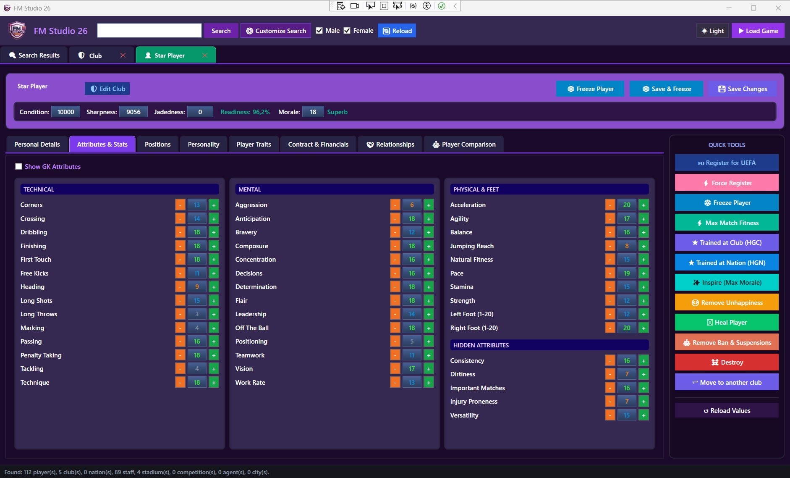
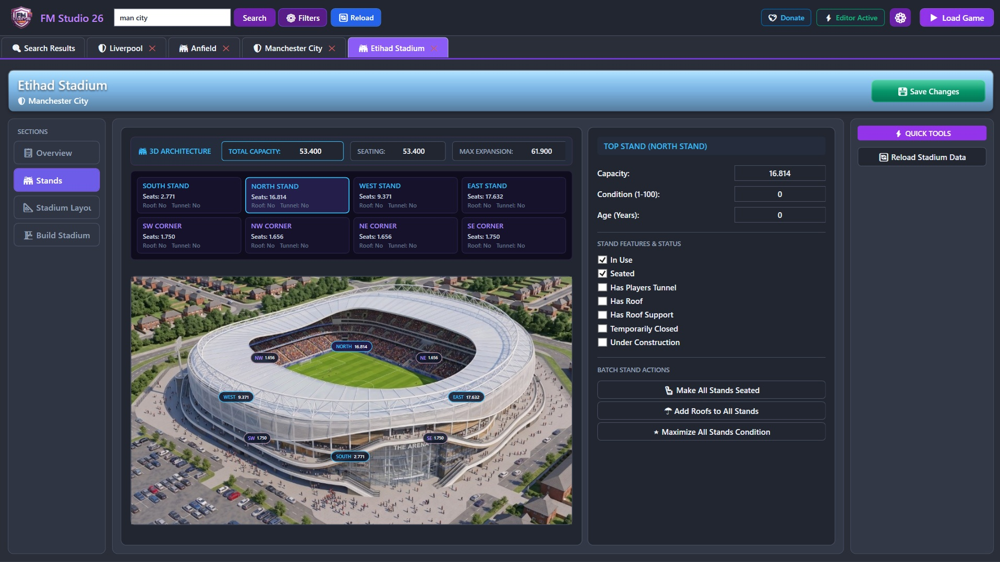
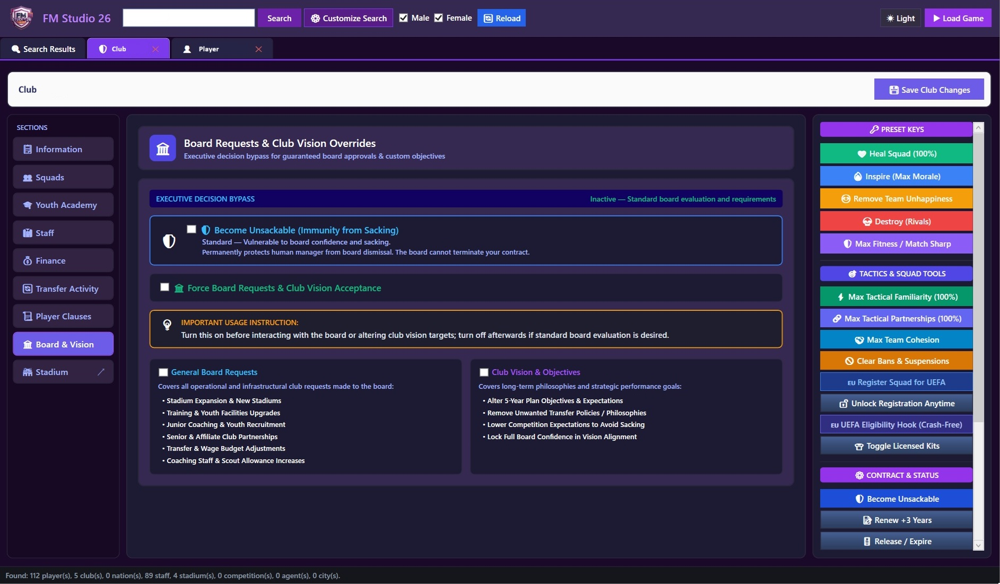
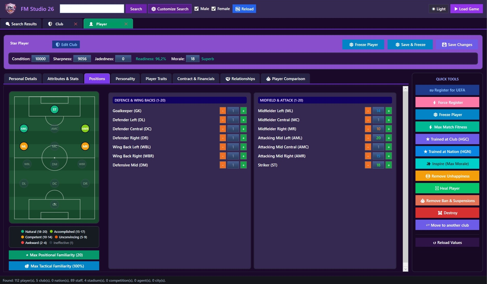
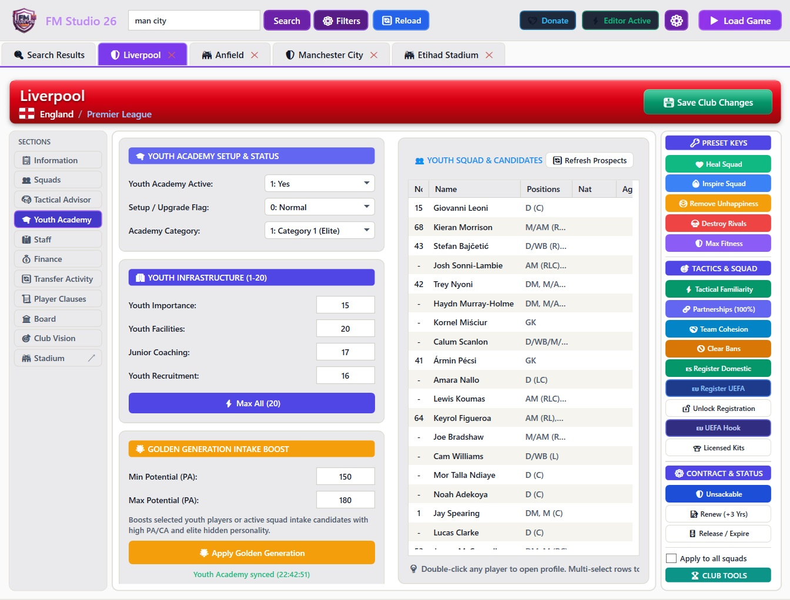
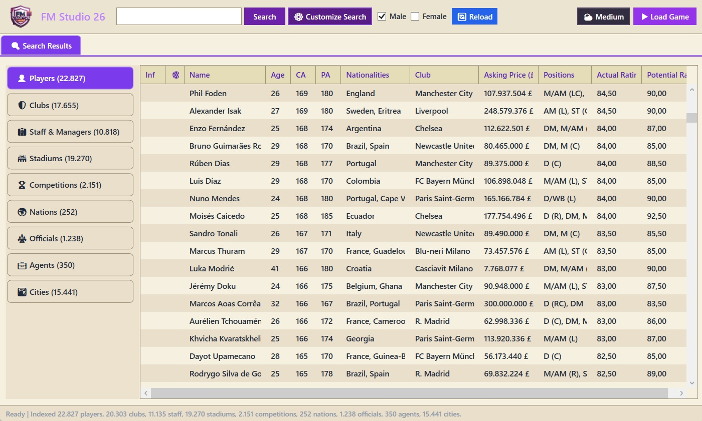

🖼️ Attributes Screenshot Preview (Attributes.jpg)
Live Player Attribute Suite
Control technical, mental, physical, and hidden attributes with instant Freeze and Heal tools across your entire roster.

🖼️ Stadium Screenshot Preview (Stadium.jpg)
Interactive 3D Stadium Architecture
Visual stand capacity overlays, batch seating modifiers, roof controls, and ground expansion triggers.

🖼️ Board Controls Screenshot Preview (Board.jpg)
Board & Vision Overrides
Immunity from dismissal, bypass board upgrade rejections, and lock 100% board confidence instantly.

🖼️ Position Pitch Screenshot Preview (Position.jpg)
Interactive Positional Pitch
Visual role proficiency display from GK to Striker with instant tactical familiarity and role mastery presets.

🖼️ Youth Academy Screenshot Preview (youth.jpg)
Youth Academy & Tactics Tools
Instant category upgrades, facility investment approvals, and squad morale/cohesion boosters.

🖼️ Theme Modes Screenshot Preview (Light.jpg)
Universal Search & Theme Modes
Lightning-fast indexing across massive save files with zero lag. Includes toggleable Dark and Light UI themes.